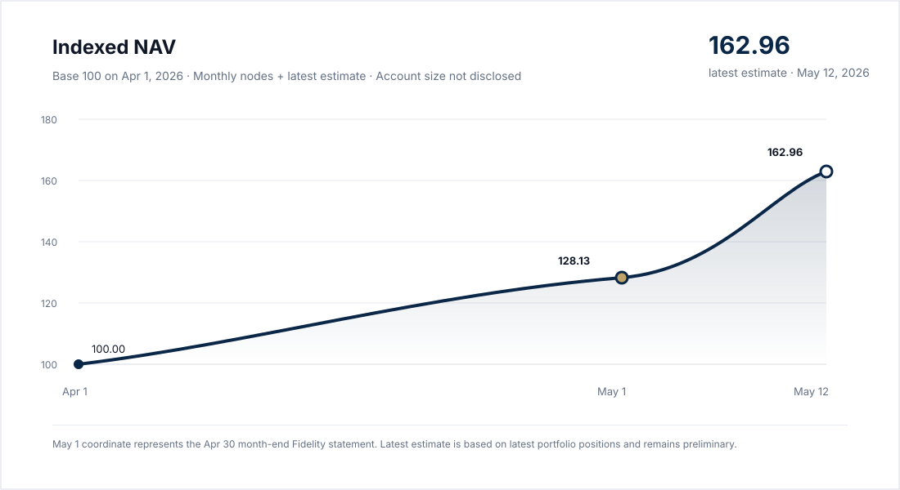

High-level exposure, not position-level disclosure.
Frontier Intelligence Capital expresses its AI and technology thesis primarily through liquid public market exposure: Nasdaq-100 / QQQ ownership, selected AI and platform equities, long-duration optionality, and disciplined liquidity reserves.
Nasdaq-100 / QQQ Exposure
The core portfolio exposure is tied to large-cap technology, AI infrastructure, cloud platforms, software, and index-level participation in the intelligence economy.
Selected AI & Platform Equities
A smaller portion of the portfolio is allocated to high-conviction public companies with asymmetric upside tied to AI adoption, distribution, data, and operating leverage.
Long-duration Optionality
Where appropriate, the strategy uses long-dated, defined-risk instruments to gain leveraged participation while managing duration, theta, and concentration risk.
Liquidity & Risk Buffer
A cash and short-duration reserve is maintained to reduce fragility, support rebalancing, and preserve flexibility during volatility or drawdowns.
Current Positioning
The portfolio is currently growth-oriented and technology-heavy, with the majority of risk exposure connected to Nasdaq-100 and AI-adjacent public market assets. Satellite positions are intentionally sized below the core index exposure.
Position-level quantities, cost basis, option strikes, and transaction history are not publicly disclosed. Percentages reflect the latest snapshot and may not sum exactly to 100% due to small residual positions and rounding. This page is intended to describe portfolio philosophy and exposure categories, not to provide trade recommendations.
Performance Reporting
Performance is disclosed without revealing account size. Frontier Intelligence Capital reports returns through an indexed NAV format, where the portfolio begins at 100 and subsequent performance is shown only as percentage change.

Future public reporting may add maximum drawdown, realized volatility, and cash reserve ratio. This demonstrates strategy effectiveness while avoiding disclosure of account balance, trade size, cost basis, or derivative contract details.
Historical Records
Month-end snapshots are archived as public percentage-based records. These records are used as benchmark coordinates for the indexed NAV chart while keeping account size, trade size, cost basis, and contract details private.
| Date | Record | Indexed NAV | Return | QQQ Return | Allocation |
|---|---|---|---|---|---|
| Apr 1, 2026 | Inception | 100.00 | 0.00% | 0.00% | Base coordinate |
| May 1, 2026 | April month-end snapshot | 128.13 | +28.13% | +14.28% | QQQ/Nasdaq 67.52%, FNGU 13.51%, HOOD 13.40%, Cash 3.30% |
| Jun 1, 2026 | May month-end snapshot | 186.41 | +86.41% | +25.29% | QQQ/Nasdaq 61.82%, APP 8.30%, RDDT 6.42%, DRAM 6.34%, Cash 4.81% |
| Jul 1, 2026 | June month-end snapshot | 171.30 | +71.30% | +24.97% | QQQ/Nasdaq 51.34%, APP 8.39%, DRAM 6.35%, CRDO 6.14%, Cash 3.08% |